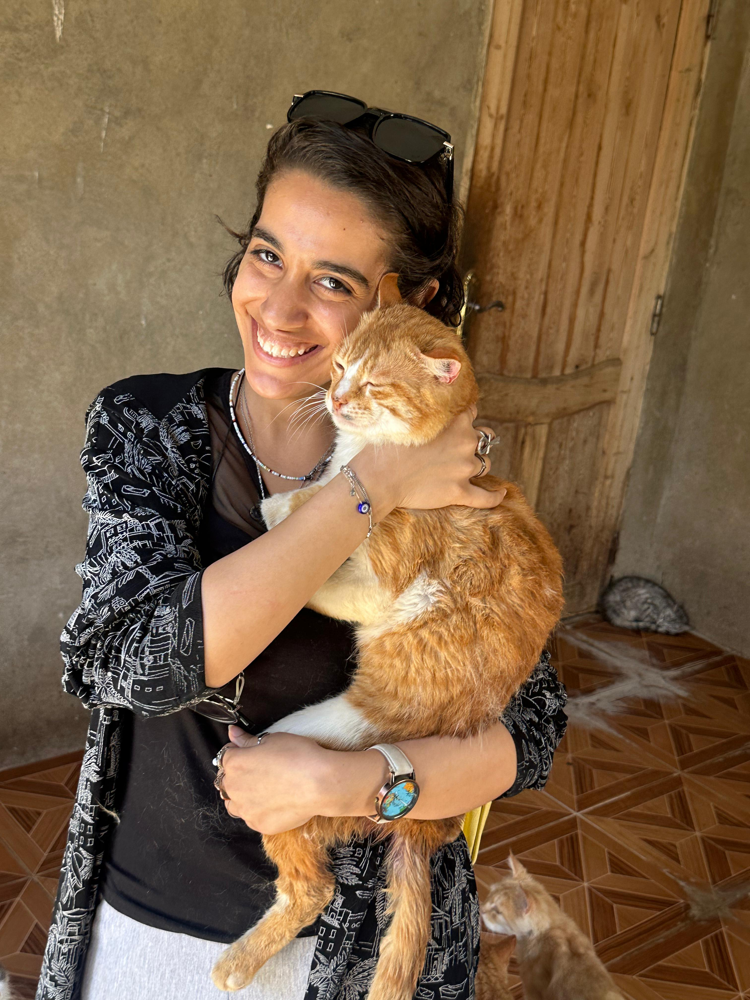

"نانسي نجيب" تخلت عن منزلها وحياتها الاجتماعيه والمهنيه، مقابل أن تبني دار امان للحيوانات المُشردة

- تعبر نانسي عن حبها الشديد للحيوانات، و عدم قدرتها على رؤية الحيوانات وهي مُصابه أو بحاجة الى الإنقاذ و تركها وحدها بالشارع، لذلك قررت نانسي التخلي عن مجال العمل بالهندسة، و تحول منزلها إلى ملجأ للحيوانات الاليفة المُصابه سواء كلاب او قطط، من ثم تحول إلى تأسيس جمعية موثقة بشكل رسمي تحت رعاية وزارة التضامن الاجتماعي، موقها بالبدرشين، و أصبحت تضم حوالي ٣٠٠ كلب و ٢٥ قطة معاً، و لكن العدد الأكبر للكلاب.
- توضح نانسي بحبها الشديد للحيوانات منذ الطفولة، و تألم قلبها عند رؤية حيوان لم يستطيع السير، أو مصاب بجرح او نزيف، ولكن قلبها اللين كان لا يملك جرأة أخذ الكلب و رعايته و مُعايشته بذلك الحالة، حتى ذات مرة كانت جالسه تتصفح عبر الفيسبوك و تعرفت على مجموعات انقاذ الحيوانات المُصابه، و بدأ قلبها يمتلك القدرة على معايشة، و رعاية الحيوانات المُصابة حتى تُشفى، "تشجع قلبي وبدأت بإنقاذ الحيوانات منذ بداية عام ٢٠١٣" و تخلت نانسي عن مجال الهندسة المعمارية لأجل رعاية الحيوانات، وتحول شقة نانسي إلى مأوى للحيوانات الضالة المشردة "أنقذت عدد كبير من الحيوانات،و عند التعافي اقوم بعرض جزء منهم للتبني، و تبناهم أصدقائي الموثوق بهم، وجزء آخر ذهب للجمعيات، لكني أدركت أنه لا يوجد نهاية لمسؤولية الإنقاذ وشقتي لن تتحمل هذا العدد من الحيوانات، لذا استأجرت مكانًا في منطقة زراعية بقرية أبو صير التابعة لمركز البدرشين بمحافظة الجيزة وذلك منذ عام ٢٠١٥، ليكون ملجأ ذو مساحة واسعة وتهوية جيدة تناسب حيواناتي وتكون ملائمة معيشتي معها".
- كانت تتابع رعاية الحيوانات ببداية الأمر بالذهاب والعودة للاطمئنان ومراعاتهم، وكان يوجد معهم مُساعدين بالجمعية لمساعدة نانسي لرعايتها بالحيوانات، ولكن وجدت صعوبة في التنقل اليهم صحياً و وقتياً، فقررت ترك منزلها بسراى القبة، لتعيش مع حيواناتها بالبدرشين، ذلك منذ عام ٢٠١٨ تقريباً، "و لا أشعر بالندم لأني تركت بيتي، ذلك أحسن لهم و لي لكي اجيد رعايتهم و اكون دائماً معهم و بجانبهم" ، وتوضح بتأثير الحيوانات و ألفتهم في حياتها وشخصيتها، قد جعلت الحيوانات حياتها أكثر راحة و سكينة، و تعلمت منهم تحمل المسؤولية بشكل أكبر، والحنية و العطاء و الحب الغير مشروط "وكل ما افتقده من صفات وفاء و حب و اخلاص و عطاء، فالبشر وجدهم مع حيواناتي الأليفة"، ولكن يوجد جزء بداخلها قد افتقد حياته الاجتماعية، و لكن" شعرت ان الله قد خلقني لهذه الرساله و لن اندم على ذلك".
- كانت أصعب فترة مرت فترة مرت بها الجمعية فصل الشتاء منذ عامين تعرضت لسيول و مطره متواصلة و استمرت، عدة أيام، و ادى ذلك لقطع كهربائي لمدة ٤ ايام، و كانت تحصل على مياه من بئر، أو تقوم بشراء المياه لتلبية الاحتياجات الاساسية، و قد حصلت على مساعدات من البعض وحصلت على مولد كهربائي يعمل بالغاز الطبيعي لإعادة تشغيل الكهرباء بالجمعية، واستمرت لبضع أيام حتى تعود الحياة لطبيعتها.
- تعاني نانسي من استخفاف واستهتار المعظم بخصوص الرفق بالحيوان، و قد واجهت استخفاف من الموظفين و البعض عند التعامل معهم ،أثناء إجراء التراخيص و توثيقها للمؤسسة، " ماذا تعنى جمعية الرفق بالحيوان فالإنسان أحق !".
- منذ فترة وجيزة أصبحت الجمعية مؤسسة موثقة خيرية غير هادفة للربح، تحت رعاية وزارة التضامن الاجتماعي، أطلقت عليها (مؤسسة الحديقة المصرية لإيواء الحيوانات الأليفة)، و فأصبح لديها باب للمساعدات الخارجية أي تبرعات، و قد لجئت لتلك الخطوة لتكون قادرة على مصروفات الكهرباء والغاز والصيانة والمتطلبات اليومية للحيوانات من أكل ورعاية صحية، ولكن يوجد نُدره جداً بالتبرعات يُعتبر نسبتها ١٠٪ من مصروفات الجمعية، " معظم الناس ترى ان البنى ادم أحق من الحيوان بالرعاية، والاعمال الخيريه ولكني أوجه لهم رسالة، البني الدم يملك القدرة بالتعبير عن ألمه أو حاجته وعايزه بالنطق والتحدث، ولكن الحيوان غير قادر بفعل أي شئ سوى الألم و البكاء، حتى لقدر الله يصل للموت بسبب الألم! و من حق الحيوان أن يعيش في بيئة صحية وآمنة، وقد خلقنا الله اقوى من الحيوان كي نتحمل مسؤوليته، ولا نتسبب في أذاه" و بسبب هذا المطلق واجهة الجمعية حالات قاسية جداً، قد تصل لبتر اليد او الساق، بسبب الاهمال و الاستهتار بحقوق الحيوان، توصي بالرفق والرحمة في المعاملة مع حيوانات الشارع الأليفة، فالبداية كانت تستقبل أي حالة مُصابه من اي شخص، او بلاغ من اي مشاهد مار بالشارع، لكن بسبب ملئ الجمعية و ضعف الامكانيات، وندرة التبرعات، وتدهور الظروف الماليه، "للاسف اقوم بانقاذ الحالات التى اراها انا فقط" ، ولكن وتحاول نانسي ان تتواصل بجمعيات الرفق بالحيوان العالمية حتى تحصل على المساعدة لاستئناف مسيرتها في إنقاذ الحيوانات الأليفة.
- المكان قائم على رواتب للعمال، و الأطباء، و فواتير الإيجار و الكهرباء و المياه و الصيانة، و"لن تقدم الدولة أي دعم بأي صورة أو شكل للجمعية"، و تقوم نانسي بعمل ميزانية سنوياً لمديرية التضامن الاجتماعي ، ولكن المخدمات المُقدمه من قبل هيئات الطب البيطري ووزارة الزراعة هو الكشف والتأكد من صحة المعايير الطبية و تهيئ البيئة المعيشية للحيوانات ومدى مطابقتها للقانون والمعايير، فقامت نانسي بافتتاح مشروع جانبي باسم «Pet’s Garden»؛ لتستطيع تمويل متطلبات الحيوانات، فكانت تملك موهبة عمل إكسسوارات من الفضة والأحجار الكريمة منذ أكثر من ١٠ سنوات وقررت جعل تلك الموهبة وسيلة أخرى لدعم الجمعية ماديًا: "كلما واتتني الفرصة أشارك في المعارض؛ ليس فقط لعرض منتجاتي ولكن في الأساس للترويج للملجأ وتشجيع محبي الحيوانات على زيارته".
- توضح ان نحن لا نمتلك ثقافة تربية الحيوانات البلدي ببيوتنا ولكن نراعي حيوانات فصائل أخرى مثل: ( كلاب، جولدن، هاسكي، بيت بول، أو قطط شيرازي، رومي)، و ذلك مساءلة مُزعجه جداً، لأنه يؤدي إهمال بالحيوانات البلدي، على الرغم من الدول الغربية حبها الشديد بالحيوانات البلدي جداً و خاصةٍ القطط، "أما عن تجارب التبني التي اعرضها يوجد نُدره بتبني الحيوانات البلدي، ٩٥٪ من تجارب التبني سيئة جداً، بعض الناس تقوم باسترجاع الحيوانات لي مرة اخرى، وللاسف العدد الأكبر يقوم بتسريبهم فالشارع، و للأسف الشديد معظم الناس ترعى الحيوان كمظهر اجتماعي و ليس كروح، فأدى ذلك سبب عدم الجدية ، وندرة التبني بالحيوانات البلدي" و تنوه ايضاً بأن الحيوانات البلدي تملك مناعة أقوى وقادر على تحمل البيئة في مصر؛ لأنها بيئته و مناخها في الأساس، و توضح بسبب حب الشعوب الغربية الشديد للحيوانات البلدي، فقامت بعض الجمعيات بفتح باب تبني للخارج (تصدير التبني للخارج بدون اي مقابل مادي)، ولكن التكلفة يتحملها المُتبني لانها تصل إلى ٣٠ ألف جنيه اجراءات تركيب شريحة للتتبع، و فحوصات طبية و صندوق مخصص للسفر بمعايير معينة، لكن يفضلون القطط البلدي عن الكلااب.
- و تنوه بعدم تواجد قانون مُفعل واضح وصريح بالرفق بالحيوان، وحفظ حقوقه، توافر له بيئه آمنه و سالمة للمعايشة، و قامت معظم الجمعيات برفع قضايا بمجلس الدولة لتفعيل هذه القوانين ولكن لم تأتي بفائدة، وتقول من الجائز عدم الاهتمام بالحيوان هو أن ضغط من المشاكل الاجتماعية والسياسية في الدولة، "هذه خليقة الله و كل الأديان وصت بالرحمة والرفق بالحيوانات و المخلوقات الأضعف، فيجب علينا احترام خليقة الله، الالتزام بوصايا جميع الأديان على الرحمة بالحيوان ومراعاة حقوقه، و من المُتعارف عليه أن تقاس مدى تحضر البلاد ورقيها بكيفية الاعتناء والرفق بالمخلوقات الاضعف اي مخلوق أضعف يجب الرفق به، ليس الحيوان فقط، ولكن يجب الاعتناء بالحيوانات و السعي على توفير بيئة وظروف ملائمة للمعيشة بشكل أفضل".
التعليقات
من الفنانين المحترمين جدا
اكتب تعليق